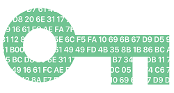
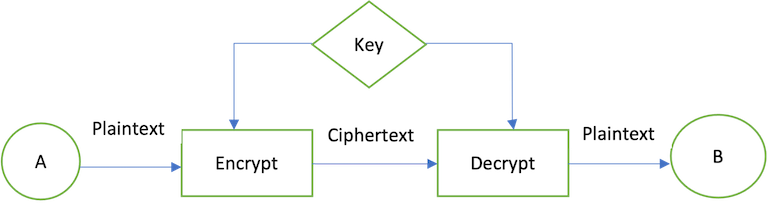
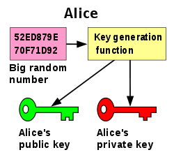
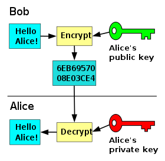
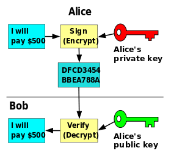

Juan Moreno
March 03, 2023
Cryptography is a method of protecting data and communications using codes and digital keys to ensure that the information is delivered untampered to the intended sender for further processing.

A digital signature is a cryptographic means through which one can verify a document’s origin, the sender’s identity, the time, and date a document was signed or sent, etc.
As cryptography operates with data, this can be either in plaintext (cleartext) or ciphertext (cryptogram).
Plaintext data means that the message is in natural format, readable to an attacker. Ciphertext data means that the message is in an unreadable format to the attacker but readable to the intended recipient.
You can convert the message from plaintext to ciphertext using the process of encryption. Similarly, you can convert ciphertext into plaintext via decryption by using a cryptographic algorithm and key used to make the original message.
Symmetric or shared key encryption is a method where both parties share a key, kept secret by both parties. For example, sender A can encrypt a message with a shared key, then receiver B can decrypt the encrypted message only with that key.

Asymmetrical encryption uses a pair of mathematical related keys, one for encryption and the other for decryption. With public key cryptography, a user has a pair of public and private keys.
These are generated using a large prime number and a key function. The keys are related mathematically, but cannot be derived from one another.

With these keys we can encrypt messages. For example, if Bob wants to send a message to Alice, he can encrypt a message using her public key. Alice can then decrypt this message using her private key. Only Alice can decrypt this message as she is the only one with the private key.

Messages can also be signed. This allows you to ensure the authenticity of the message. If Alice wants to send a message to Bob, and Bob wants to be sure that it is from Alice, Alice can sign the message using her private key. Bob can then verify that the message is from Alice by using her public key.

keytool to manage keys and certificates and
store them in a keystore.keytool command allows us to create self-signed
certificates and show information about the keystoreSpring Boot makes it easy to create stand-alone, production-grade Spring based Applications that you can “just run”.
To integrate CXF with Spring boot we need to add the following dependencies: spring-boot-starter-web,cxf-spring-boot-starter-jaxws, cxf-rt-transports-http, cxf-rt-ws-security and cxf-rt-features-logging.
@Configuration class a @Bean
with the client implementation. It’s the class with the annotation
@WebServiceClient.JaxWsProxyFactoryBean for the client
class.If the WSDL already exists, follow the WSDL-first steps plus:
@Configuration class an
javax.xml.ws.Endpoint implementation. It’s the interface
with the annotation @WebService.